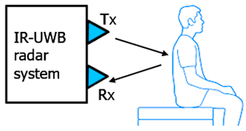

Statistical Acoustic Sensing
Demo: Statistical Acoustic Sensing For Real-Time Respiration Monitoring and Presence Detection
MobiSys 2024 (Demo/Poster/Workshop)

IR-UWB Radar Sensing
- Applied algorithms on IR-UWB signals to estimate breathing rate of the user

Room Acoustic Modelling
Temporal Modeling of Room Impulse Response Generation via Multi-Scale Autoregressive Learning
Interspeech 2025